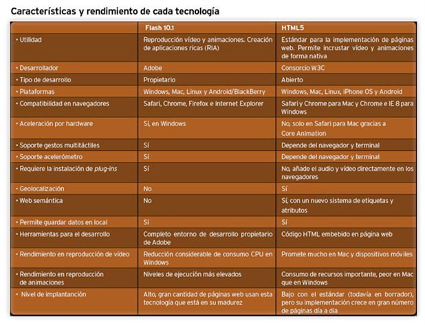

Rendimiento
Rendimiento e Integración: Proporciona una mayor optimización de la velocidad y un mejor uso del hardware.
Web Workers
Permite delegar la evaluación JavaScript para subprocesos en segundo plano, lo que evita que estas actividades ralenticen eventos interactivos.
XMLHttpRequest Nivel 2
Permite buscar de forma asíncrona algunas partes de la página, mostrando contenido dinámico, que varía según el tiempo y las acciones del usuario. Esta es la tecnología detrás de Ajax.
Motores JIT compilación de JavaScript
La nueva generación de motores de JavaScript son mucho más poderosos, lo que lleva a un mayor rendimiento.
History API
Permite la manipulación del historial del navegador. Esto es especialmente útil para la carga interactivamente nueva información en las páginas.
El atributo contentEditable: transformar su sitio web en una wiki!
HTML5 ha estandarizado el atributo contentEditable. Aprenda más sobre esta opción.
Arrastrar y soltar
La API de arrastrar y soltar (drag and drop) permite soporte para arrastrar y soltar elementos dentro y entre sitios web. Esto también proporciona una API simple para el uso de extensiones y aplicaciones basadas en Mozilla.
Gestión del foco en HTML
Los nuevos atributos HTML5 activeElement y hasFocus son soportados.
Manejadores de protocolo basados en web
Ahora puede registrar las aplicaciones web como controladores de protocolo utilizando el metodo navigator.registerProtocolHandler().
requestAnimationFrame
Permite controlar la renderización de animaciones para obtener un óptimo rendimiento.
Fullscreen API
Controla el uso de la pantalla completa de una página Web o aplicación, sin la interfáz de usuario del explorador mostrada.
API Pointer Lock
Permite bloquear el puntero al contenido, por lo que los juegos y aplicaciones similares no pierden el foco cuando el puntero alcanza el límite de la ventana.
Eventos en línea y fuera de línea
Para construir una buena aplicación web offline-funcional, lo que necesita saber cuando su aplicación esta realmente sin conexión. Dicho sea de paso, también es necesario saber cuando su solicitud sea devuelta a un estado de conexión de nuevo.
